复杂系统与后台设计
企业管理平台、监控系统、数据看板、复杂表格与多角色业务流程。
Available for product design opportunities
Designing clear and intuitive experiences for complex digital products.
Designer Profile
我是一名拥有 10+ 年经验的 UI/UX 设计师，擅长从复杂需求中梳理产品结构，将业务逻辑转化为清晰、统一、可落地的设计方案。
长期参与企业后台、数据监控、金融科技、移动端产品与设计系统建设，能够覆盖需求分析、体验策略、视觉设计、高保真原型以及跨团队协作。
梳理需求与结构
快速生成方案方向
在 Figma 中高保真落地
补齐交互与开发交付
将策略、交互、视觉与设计规范连接起来，让设计不仅好看，也能支撑业务增长和团队协作。
企业管理平台、监控系统、数据看板、复杂表格与多角色业务流程。
教育、社区、金融等场景的用户路径、增长转化和全链路体验设计。
把复杂数据转化为可理解、可操作、能支持决策的信息界面。
组件规范、跨端一致性，以及 AIGC 在视觉探索与效率提升中的应用。
围绕驾驶任务、车辆状态与沉浸体验，构建高识别度的仪表和中控界面。
Selected works, 2020—2026
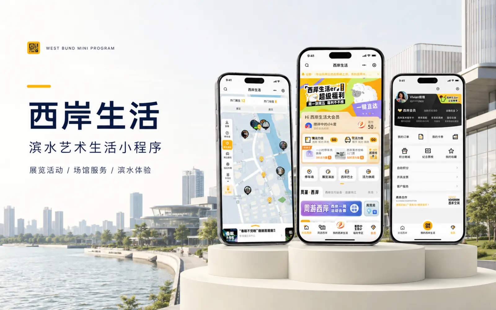
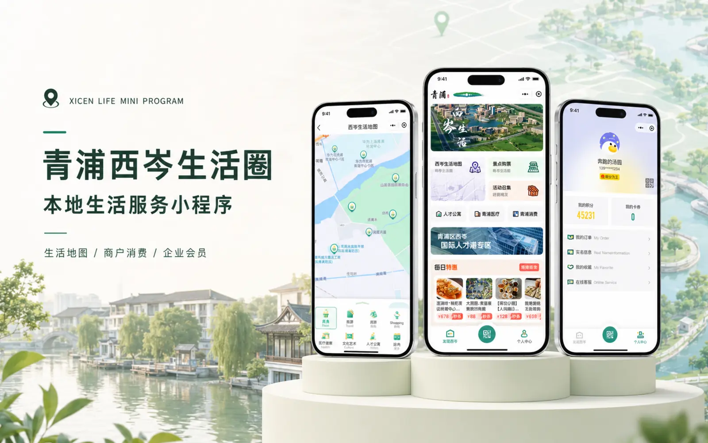
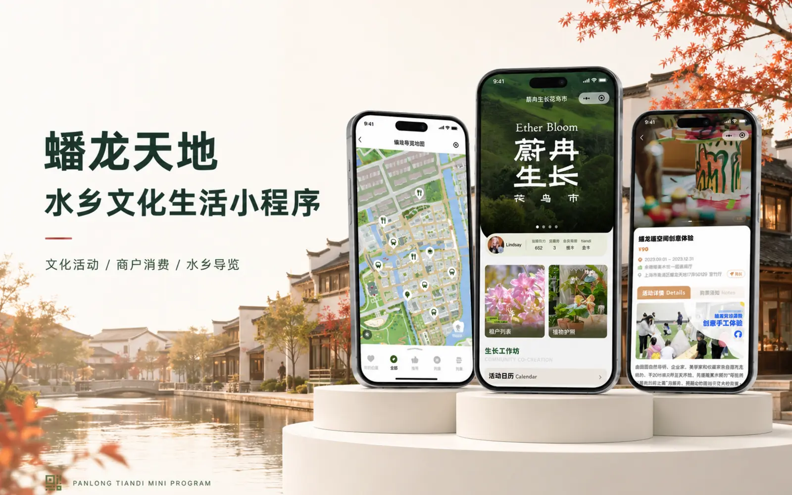
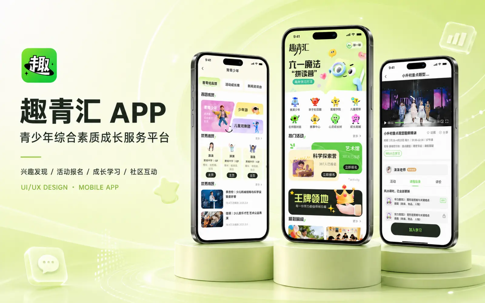
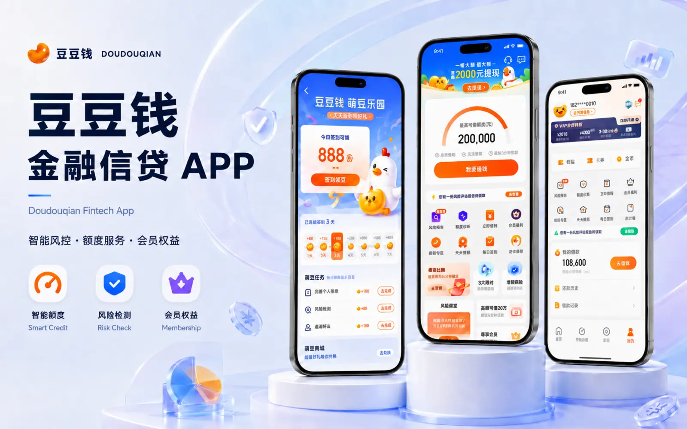
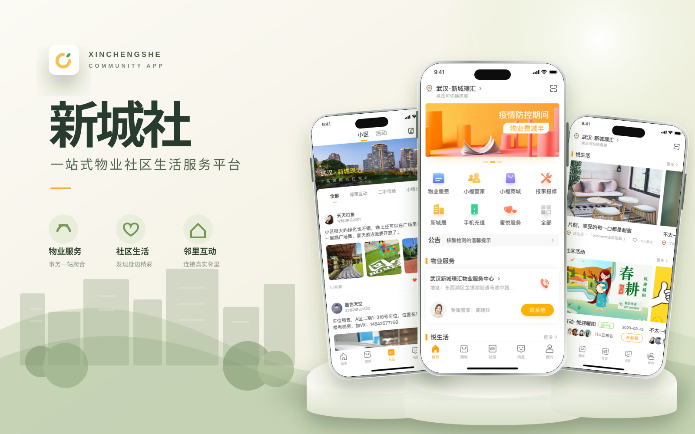
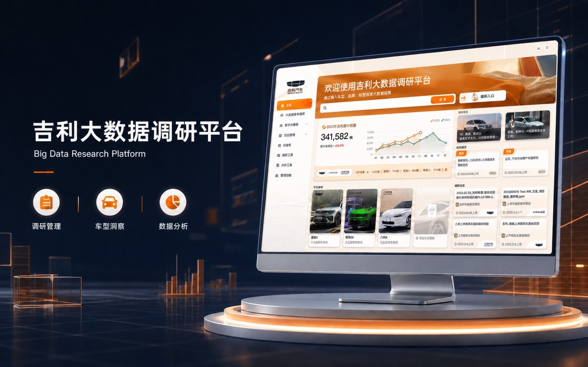
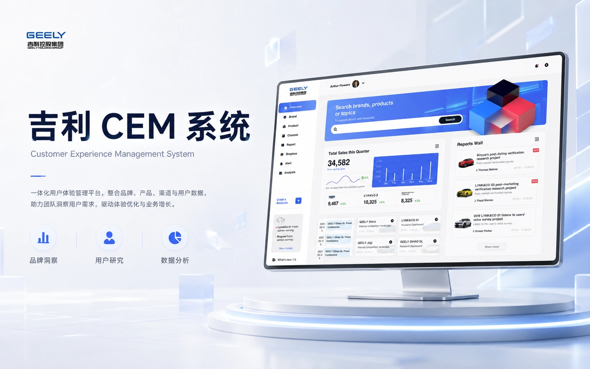
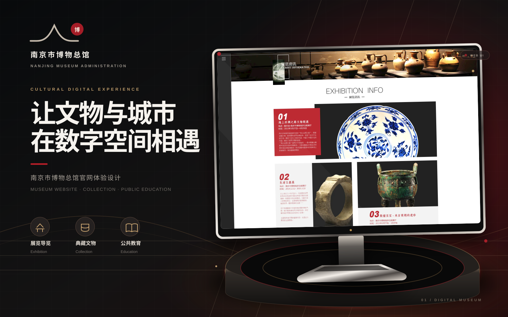
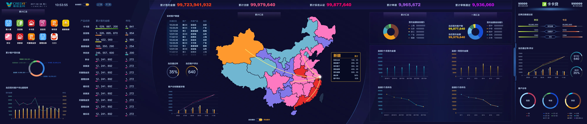
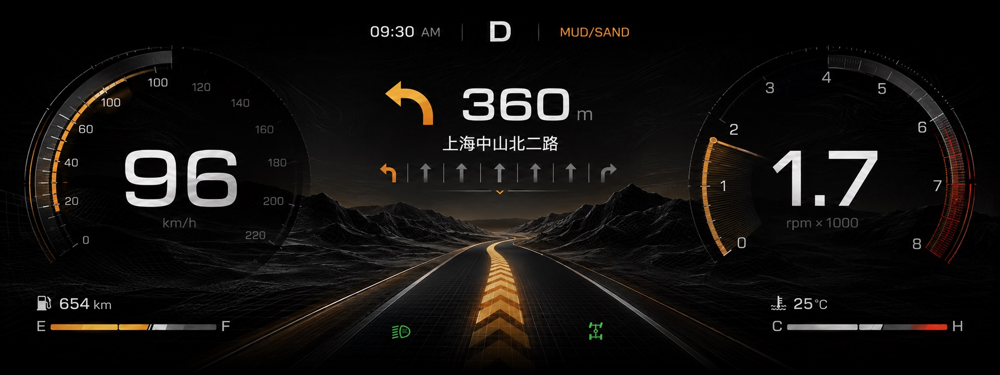
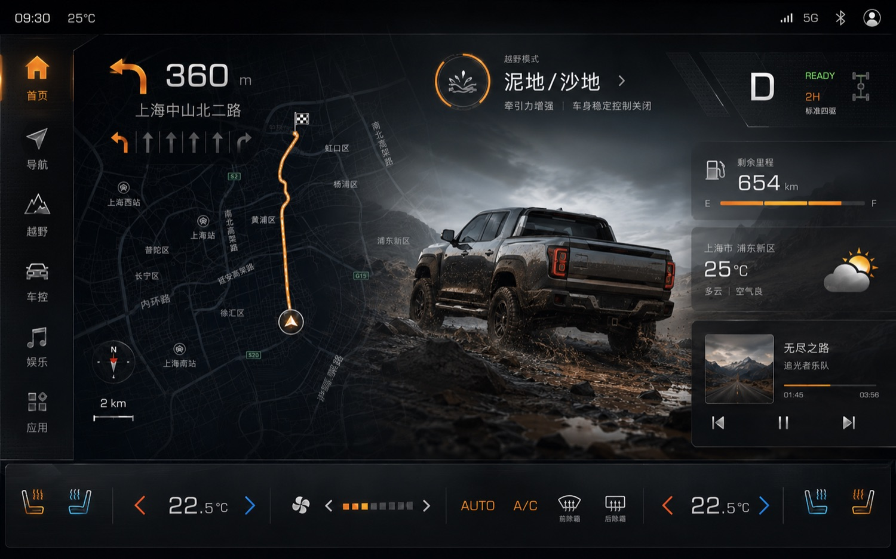
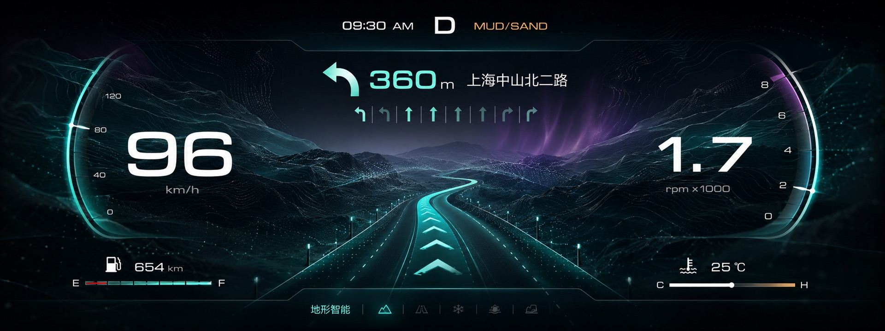
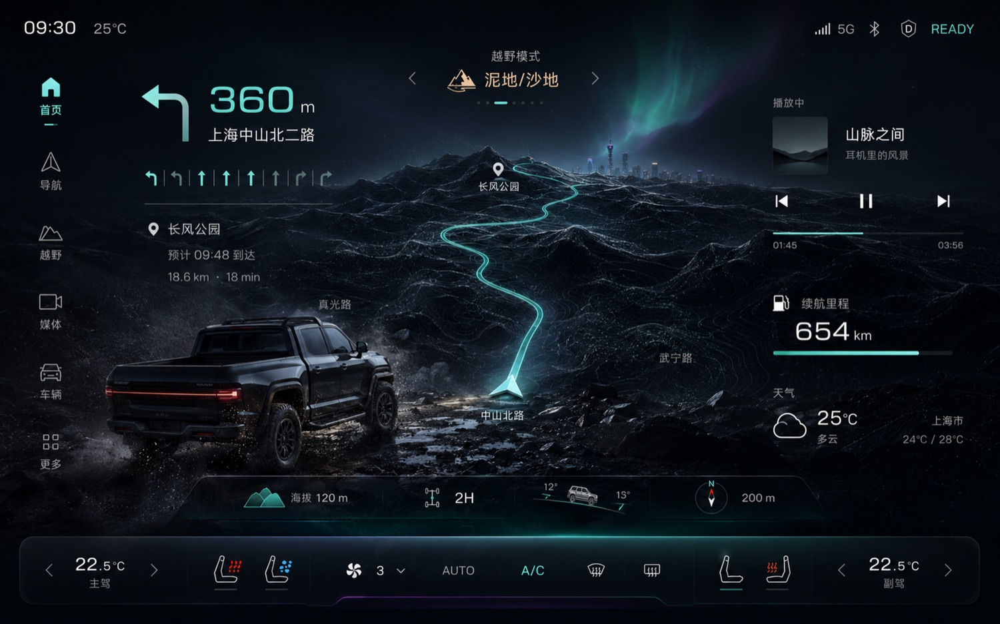
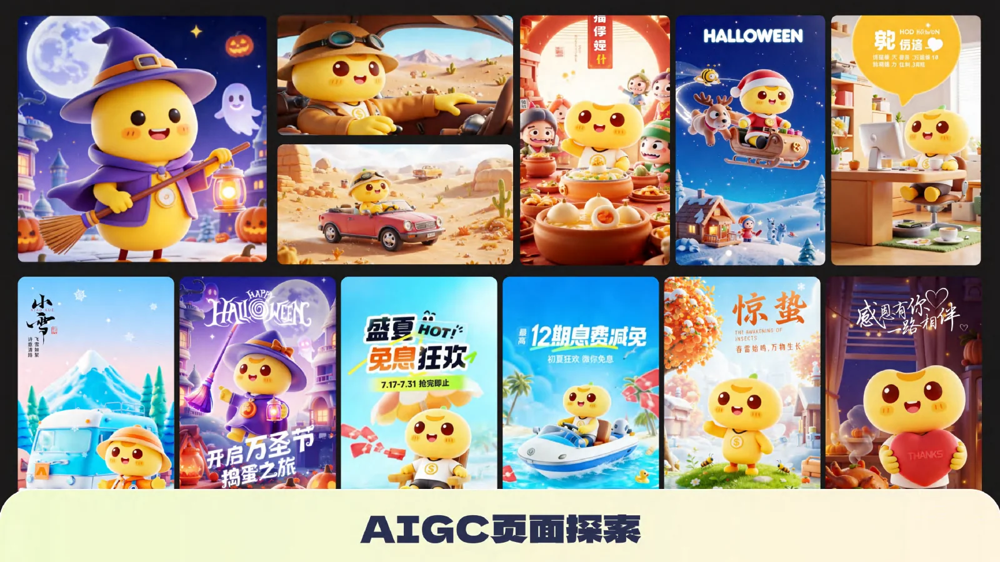
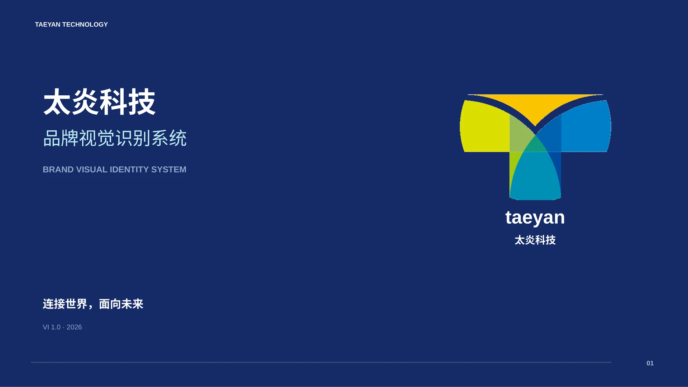